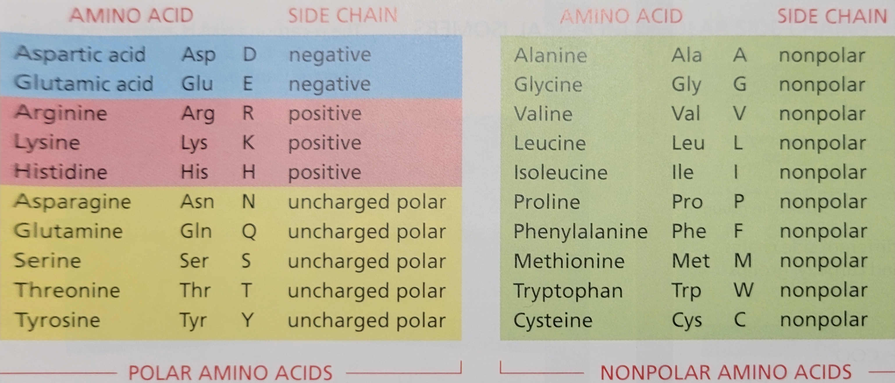
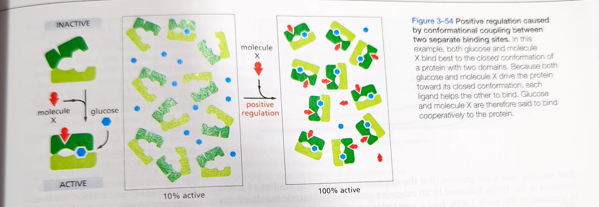
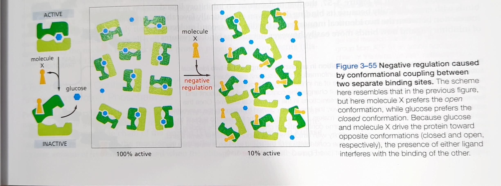
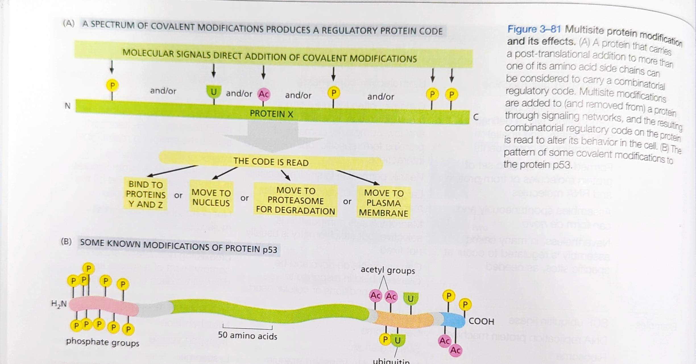
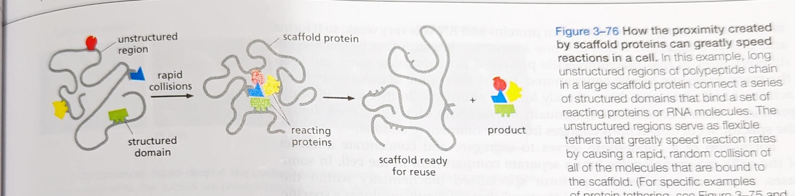

BIO376: Cell and Molecular Biology
Lesson 1 - Enzymes and Free Energy
Noncovalent Interactions
Electrostatic attractions
Result from the attractive forces between oppositely charged atoms. Form between permanent dipoles.
Hydrogen bonds
The partial sharing of an electropostive hydrogen atom between two negatively charged atoms. Strongest when a straight line can be drawn between the three atoms.
van der Waals attractions
A weak attraction created by flickering dipoles. Flickering dipoles are the result of the fluctuations in the electron cloud around an atom.
Hydrophobic force
Caused by the hydrogen-bonded water network pushing non-polar molecules out.
Noncovalent bonds specify both the precise shape of a macromolecule and its binding to other molecules
Noncovalent interactions cooperate to fold macromolecules into unique shapes. Additionally they can add up to create attractions between two molecules.
Enzymes
Enzymes Lower the barriers that block chemical reactions
Energetically favorable reactions are reactions that results in a “downhill” direction. Ergo, to be energetically favorable a reaction must result in a loss of free energy.
Free energy
Energy that can be harnessed to do work or drive a chemical reaction
\(\Delta\)H = \(\Delta\)G = T\(\Delta\)S
Basic enzyme structure
Enzymes are proteins that bind tightly to one or more molecules called substrates, and hold them in a way that reduces activation energy for a chemical reaction acting as catalysts. Catalysts are any substance that an lower the activation energy of a reaction and increase the speed of the reaction.
How Enzymes find their substrates
Enzymes are slow moving compared to their substrates and bind to them when collisions occur. All molecules are moved through three types of motion:
Translation motion (Diffusion): the movement of from one place to another
Vibration
Rotation
Motion in the system is cause by heat energy. Collisions between molecules cause them to change direction, this change in direction is called \(random\) \(walk.\) Net distance of a molecule is proportional to the square root of the time involved.
\[ \sqrt{time} \] Enzymes bind to their substrates through complementary charges at the bind regions.
Free Energy Changes
The concentration of reactants influences the free-energy change and a
reaction’s direction

\(\Delta\)G = \(\Delta\)G\(^\circ\) + RT ln K
\(\Delta\)G\(^\circ\):
standard \(\Delta\)G
1 mol reactants
1 mol products
25\(^\circ\)
R:
- gas constant
T:
- Temperature Kelvin
K:
Equilibrium ratio
products / reactants
Simplified equation:
\(\Delta\)G = \(\Delta\)G\(^\circ\) + 1.42 log([P]/[R])
- assumes temp of 37\(^\circ\)f
\(\Delta\)G = G\(_\text{products}\) - G\(_\text{reactants}\)
\(\Delta\)G < 0: Spontaneous (exergonic) \(\Delta\)G > 0: Non-spontaneous (endorgonic) \(\Delta\)G = 0: Equilibrium
Enzymes lower the E\(_\text{a}\) (activation energy)
For sequential reactions, \(\Delta\)G values are additive
Lesson 2 - Protein Folding and Chaprones
The majority of the dry weight of a cell is it’s proteins. Proteins alos act as the facilitators of chemical reactions.
There are four chemical categories that amino acids can be grouped into:
polar-positive charge (basic)
polar-negative charge (acidic)
polar-uncharged
nonpolar
 The unique side chain (r group) of each amino acid determines their charge. The side chain also determines if a amino acid is polar or nonpolar.
Protein folding
primary structure: sequence of amino acids. Formed from peptide bonds (strong covalent bonds). Bonding occurs at the junction of an amino and carboxyl groups (backbone of the protein).
secondary structure: \(\alpha\) helices and \(\beta\) sheets. Formed from hydrogen bonds (weak noncovalent bonds). Bonding occurs between the backbone C=O to N-H.
tertiary structure: 3D structure. Formed from disulfide bonds (strong covalent bonds), hydrogen bonds between polar amino acids, ionic bonds, van der Waal interactions (weak noncovalent bonds). Bonds form at side chains within the ploypeptide chain.
quarternary: multiple subunits forming a functional whole. Formed from same bonds as tertiary. Bonds form at side chains between the ploypeptide chains (subunits).
Methods in Cell Biology
Isolating Cells and Growing Them in Culture
While cells can be observed under a microscope, cell functions require biochemical analysis to be observed.
Heterogeneous cell populations contain a mixture of cell types coming from tissues.
Homogeneous cell populations contain a singular cell type separated from other cell types by dissociation.
Cells can be grown in culture
It is advantageous to grow cells in a culture for multiple reasons:
cultures are more homogeneous than coming from a intact tissue or organ
the culture can be more closely observed under a microscope
biochemical analysis can be performed by removing specific molecules
\(In\) \(vitro\):
cell biology: cultured in a dish
biochemistry: reaction carried out in a test tube, a cell free environment
\(In\) \(vivo\):
cell biology: using an intact organism
biochemistry: reaction carried out in live tissue (even if tissue is cultured in a dish)
Most cell cultures require a culture dish coated in a material that the cells can adhere to.
Primary cultures are cultures prepared directly from a the tissues of an organism. The opposite of a primary culture would be cell lines, often from cancer cells, that are grown in a dish that are immortal.
Purifying Proteins; Cells can be separated…; Cell Extracts Provide…
Cells can be broken up in a variety of ways:
osmotic shock
ultrasonic vibration
forced through small orifices
ground up by a blender
Homogenate is a slurry of membrane bound organelles from cells being broken up.
Cell fractionation is performed using a perparative centrifuge that spins the cell components at a high speed. Separating components by size and density. The different bands of cell components formed in the salt solution are known as velocity sedimentation.
Equilibrium sedimentation occurs when a solution of sucrose and cesium chloride. The cell components are seperated by their buoyant density.
Purified Cell-free systems are required…
Purified cell-free systems are created by fractionating cell homogenates with the aim of purifying the macromolecules that are needed to catalyze the biological process of interest. This method aligns with the conecept of reductionism by breaking a cell in to it constiuant components to understand the function of each of them.
Analyzing Proteins; Proteins Can Be Separated by SDS…
SDS (sodium dodecyl sulfate): a powerful negatively charged detergent that binds to the hydrophobic regions of proteins unfolding them into extended polypeptide chains.
Polyachrylamide: a highly cross-linked polymer that serves as the matrix for proteins to pass through.
\(\beta\)-mercaptoethanol: a reducing agent that breaks S-S linkages in multisubunited proteins so that the individual polypeptides can be analyzed.
An electric field is applied to an SDS-PAGE gel so that the charge protein molecules will migrate from the negatively charged electrode towards the positive electrode. Similarly sized proteins travel at a similar rate. Using a dye such as coomasie blue, bands of similarly sized proteins can be observed.
Specific Proteins Can Be Detected by Blotting…
Western blots, also know as immunoblots, detect proteins by using antibodies specific to the protein of interest.
Sets of Interacting Proteins…
Co-immunoprecipitation is a process that uses an antibody to bind to one component protein of a complex. The antibody is coupled with a solid matrix that cause the antibodied bound protein and its related complex protein to precipitate to the bottom of the testube.
Recombinant DNA
DNA that has been formed artificially by combining constituents from different organisms.
Plasmid: a small circular DNA structure
Mutations Can Cause Loss or Gain…
Loss-of-function mutation: a mutation that causes a gene product to not work or be produced less. Most often are recessive genes
Gain-of-function mutation: a mutation that results in over production, irregularly timed gene products, or new function of a gene product. Frequently are dominant genes.
Genes can be ordered in pathways…
When a gene is upstream from another it is transcribed before the other gene.
Null mutation: a mutation that stops function
Synthetic phenotypes are caused by double mutations that cause more severe or more phenotypes than a single mutation.
Genes Can Be Engineered…
Knockout - the deletion or deactivation of both copies of a gene.
Inducible promoter - a promoter required for gene activation that can be turn on and off at anytime.
dominant-negative -
Transfection
Transfection is the insertion of nucleic acids into a eukaryotic cell.
Antibodies can be used to detect…
Radioisotopes are used…
Lesson 3 - Protein Degradation System
Purpose of the Proteasome
Destroy misfolded, partially folded, or damaged proteins
Destroy “unwanted” proteins (regulated destruction) e.g. cyclins
Created peptides for presentation to the immune system
New Proteins
New proteins can:
fold properly without help
fold properly with help from chaperons
improperly fold and be destroyed by the proteasome
Failure of these three outcomes can lead to protein aggregates.
Proteasome Structure
20s Core
A hollow tube with protease active sites. Proteins must be fed through the core to be degraded. The core is made up of 4 rings each made up of 7 subunits.
19s Caps
Each cap is an ATP-unfoldase with Ubiquitin binding sites and deubiquitinases (Ubiquitin hydrolase). Each cap has six subunits.
The total proteasome is a 26s proteasome.
Ubiquitination

Degrons
Degrons are degradation signals on or in protein substrates that bind to the E3 ligase.
N-end Rule:
- N-termius or cleavage of the N-terminus contains certain amino acids that act as a degrons.
Lesson 4 - Protein Regulation
The Cell Regulates the Catalytic…
Active Protein Regulation
Active regulation is when regulatory molecules stimulate enzyme activity rather than shutting them down.
Cells can actively control regulate proteins by:
regulating the expression of the gene that encodes that enzyme
confining sets of enzymes to particular sub-cellular compartments enclosed by distinct membranes
covalently modifying enzymes
Phosphorylation (MOST COMMON)
acetylation
Methylation
Ubiquitination
sumoylation
palmitoylation
etc.
destroying proteins by targeted proteolysis
reversible change in the activity of an enzyme in response to specific small molecules it encounters
Negative Protein Regulation
Feedback Inhibition: a product produced late in a reaction pathway inhibits an enzyme that acts earlier in the pathway.
Negative regulation is when an enzyme is prevented from activating.
Allosteric enzymes have two or more…
Allosteric regulation is regulation that occurs when a molecule binds to the regulatory site of a enzyme causing its confirmation to change blocking or enhancing the active site.
Regulatory site: binding site for a regulatory molecule
Active site: binding site for substrates




Many changes in proteins are driven…
Phosphorylation is a covalent modification of a enzyme where a phosphate group is added to the protein. The ways that phosphorylation can affect activity of a protein are:
by attracting a cluster of positively amino acid side chains causing a major confirmation change.
forming part of a structure that the binding sites of other proteins (adaptor proteins) recognize.
masking binding sites for protein-protein interactions
One third of all proteins in mammalian cells are thought to be phosphorylated at a given time. A protein can be phosphorylated in multiple places but a polyphosphate chain cannot be formed.

A Eukaryotic Cell Contains a large…
Protein phosphorylation involves the enzyme-catalyzed transfer of the terminal phosphate of an ATP molecule to the hydroxyl group on a serine, theonine, or tyrosine side chain of the protein. Phosphorylation is considered an unidirectional reaction because of the large amount of free energy released when the phosphate-phosphate bond is broken to convert ATP to ADP. Protein kinases catalyse the phosphorylation reaction. A protein phosphatase catalyzes the reverse reaction.
Proteins that bind and hydrolyze GTP…

Regulatory Proteins Control…
The Activation of Protein Machines…

